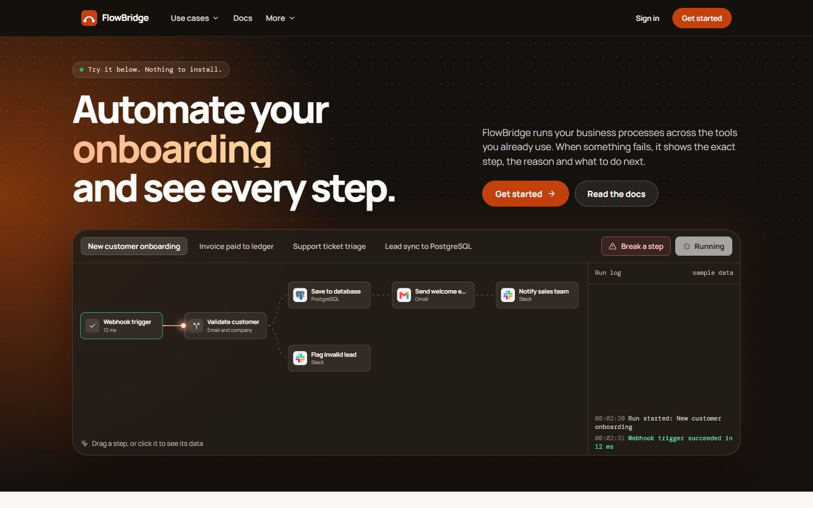
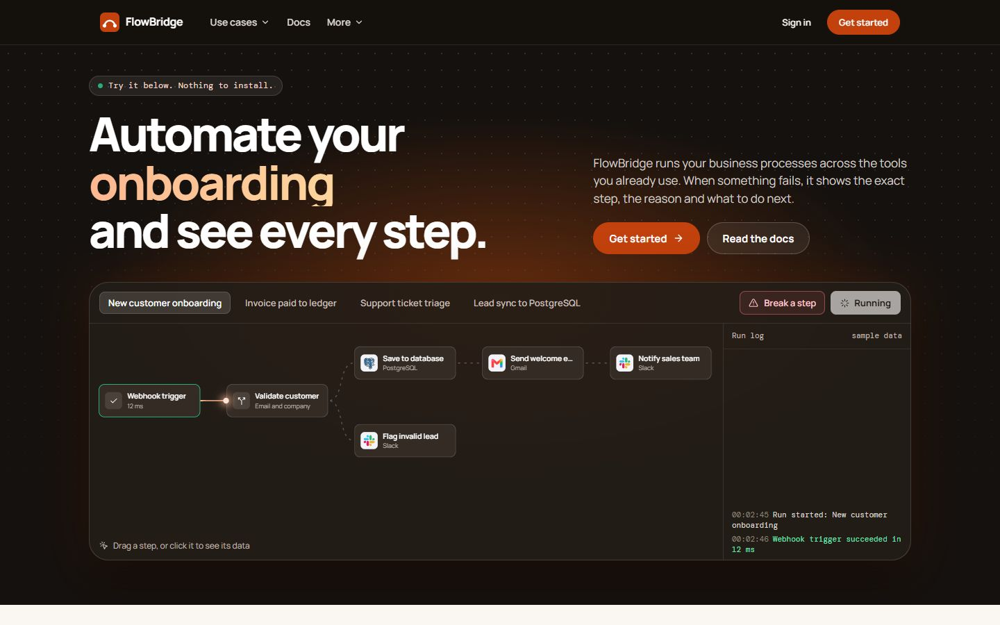
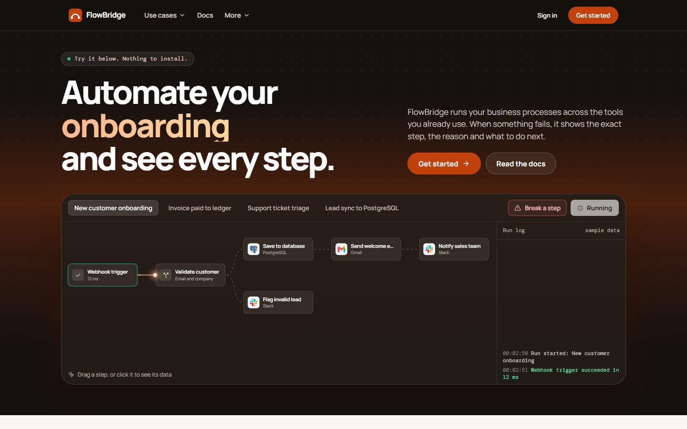

The section stays mostly dark, as it is now. Each option keeps a similar amount of orange but spreads it in a different gradient. The rest of the page stays the same. Open a live page to see the movement and the hover effects.
Two blurred glows, orange on the left and amber on the right, drifting over a dark base.
Open live pageA warm orange wash in the top-left corner balanced by a softer amber one in the bottom right. The centre stays dark.
Open live pageA broad, even orange wash across the top that fades into dark by the middle of the demo.
Open live pageOrange warms the left side behind the headline and fades out towards the right.

Orange sits on the right, behind the description and buttons, and fades towards the headline.
Open live pageDark at the top, with a wide, gentle orange glow along the bottom behind the demo.
Open live pageOne large, soft bloom of orange in the middle of the section, behind the gap between the text and the demo.

A soft horizontal band of orange across the middle, with dark above the headline and below the demo.
